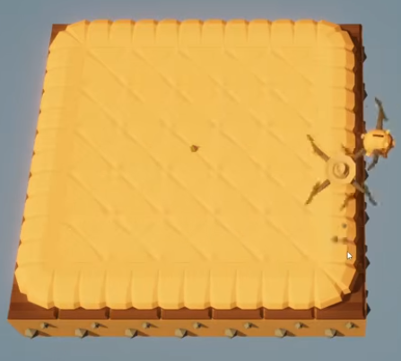
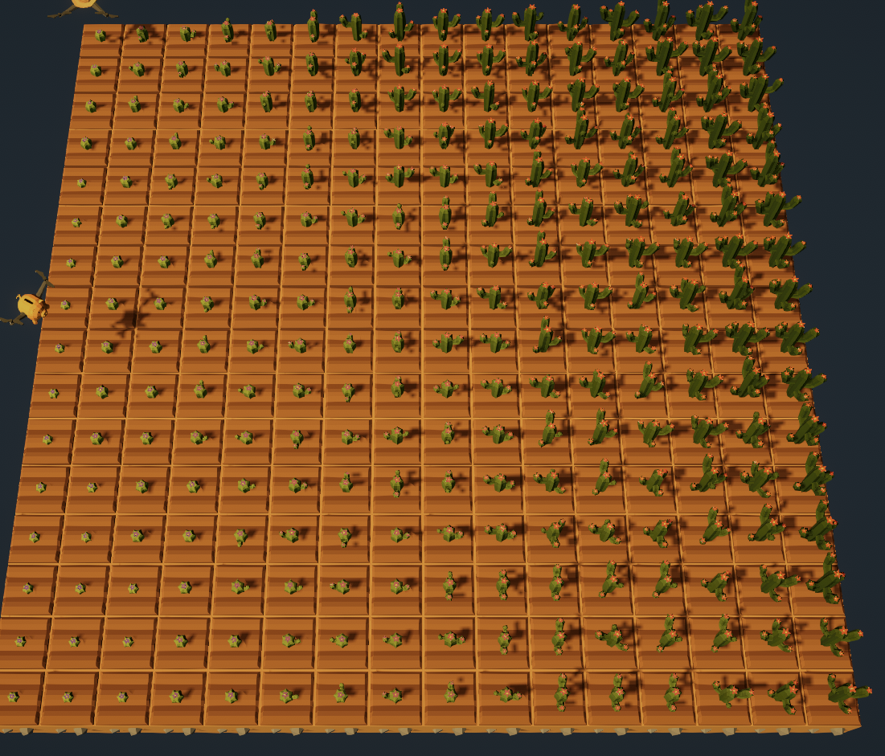

Gameplay (currently selected)
In-Game Coding
Gameplay
Some plants may also die, affecting potential bonuses the player could have earned. For example, if pumpkins are planted in a Y × Y square and all of them remain alive, they merge into a single giant pumpkin, granting the player a bonus.


"You will receive an amount of cactus equal to the number of harvested cacti squared. If you harvest n cacti simultaneously, you will receive n**2 Items.Cactus.
The size of a cactus can be measured with measure().
It is always one of these numbers: 0,1,2,3,4,5,6,7,8,9.
A cactus is considered to be in sorted order if all neighboring cacti to the North and East are fully grown and greater than or equal to it in size, while all neighboring cacti to the South and West are fully grown and less than or equal to it in size."
An example of the correct disposition is shown in the picture below (every number represents the value returned by 'measure()'):

